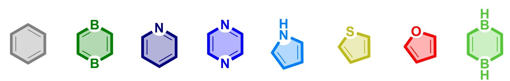

30 September 2020 - Completely redesigned version of Predi-XY is here!
To read about Predi-XY and how it works, you can access the version of record in Electronic Structure or see the preprint on ChemRxiv. To download or clone the program, please visit our GitLab repository or use pip ("pip install predixy").
To Predi-XY Paper
To Predi-XY Code
To Predi-XY Preprint
Predi-XY is a homemade utility written in Python 3 for generating predicted NICS-XY-Scans of cata-condensed systems polycyclic aromatic systems, using a novel additivity scheme, which was described and expanded on in:
1) Piecing it Together: An Additivity Scheme for Aromaticity using NICS-XY-Scans.
2) An Additivity Scheme for Aromaticity: The Heteroatom Case
Using its onboard library and the principles of additivity, Predi-XY generates NICS-XY-Scans for unbranched cata-condensed molecules composed of the building blocks below within seconds (or less), without the need for a quantum-mechanical calculation.

Main features of Predi-XY:
If you use Predi-XY, please cite the following:
1. A. Wahab, F. Fleckenstein, S. Feusi and R. Gershoni-Poranne Electronic Structure 2020, 2, 047002.
2. R. Gershoni-Poranne and A. Stanger, Chem. Eur. J. 2014, 20, 5673-5688.
3. R. Gershoni-Poranne, Chem. Eur. J. 2018, 15, 4165-4172.
3. P. Finkelstein and R. Gershoni-Poranne, ChemPhysChem 2019, 20, 1508-1520.